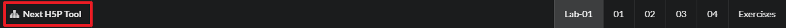
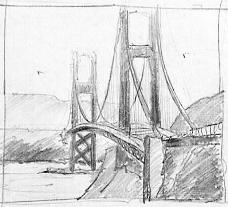
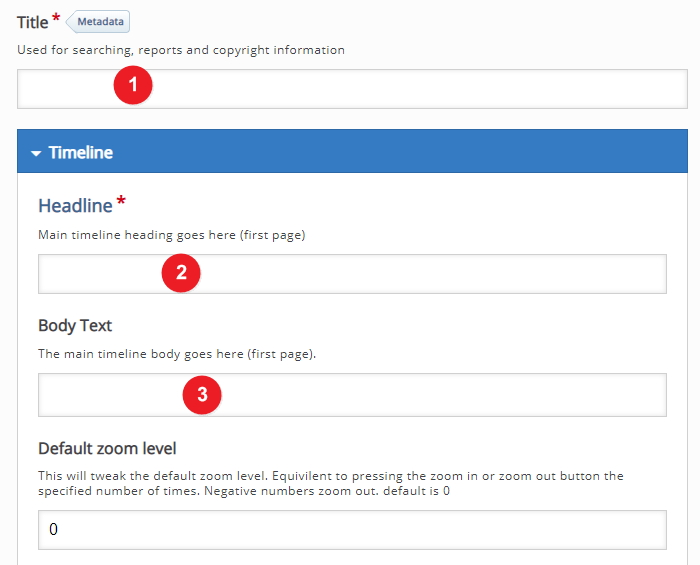
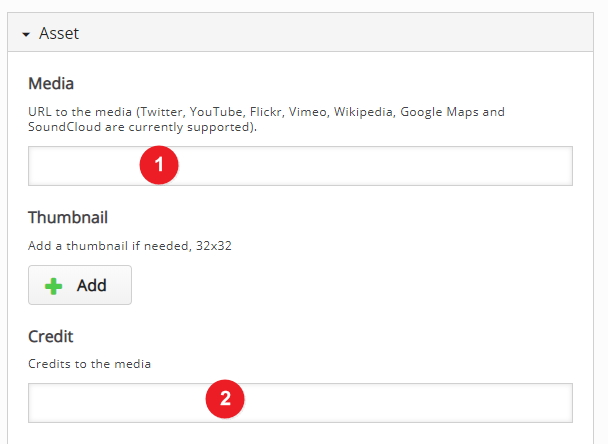

Objectives
A few sentences on the purpose of the lab. Avoid bullet points here for formatting reasons.
How to use this lab
When you click on the lab card on the workshop screen (see example below) you will be presented with the labs steps screen

Lab steps
Next you will need to work your way through each step, starting with the objective (this screen) then work your way through the steps start with 01 then moving to 02 and so on.

Getting back to the home screen
In order to get back to the workshop screen simply click on the workshop name in the top left

lets get started
To view the Presentation component on the H5P website please follow the example link on the workshop page or click here
The Context
So for this presentation component I will use a timeline on the the Internet as an example, you may wish to use something else that is related to your own area of expertise. I will use some slide that I have developed from the presentation workshop.
Log into Moodle
Log into Moodle here and navigate to your sandbox area where you want to use the H5P Timeline component, at this stage we will start the process by adding the H5P Interactive Content type in Moodle.
Adding the activity
I have decided to call the section Timeline Example but you may want to use some other name which is okay, select the Add an activity or resource option.

Add in Interactive Content
Now select the Interactive content type from the pop-up list

Search and use the correct Interactive Component
A this stage you will start to build the H5P Interactive content. Select or search find the editor for the component you plan on using, in this case it the Timeline, so I have started the search for "time"
Now you should see the Timeline component select the details button

Now we can use this component now by selecting the "use" button

Next
Move to step 02 in the lab
Timeline context
This screen is slighty more complicated then previous workshops screens, in this example we are going to build a timeline of the internet so that the student can navigate through the timeline and see all the major dates that happen as part of the Internet, I will be using some slides that I prepared earlier (for the Presentation Workshop) and I will use those as my images.
Settings explained
On the screen we see a few part that we need to explain first before we continue, starting with the Title, which is the title the user will see on the H5P Activity screen. in this example I have called it "Timeline of the Internet", we can also add a short introduction and if you like you can add an image, all of these will appear on the start screen for you timeline.
You now should have something like this image.

images explained
If you decide to use an image as an asset for a particular date then H5P is very rigid when it comes to using images, it is possible but from my experience its best to use images from Wikipedia Commons

Search Wikipedia Commons
So if you want to include an image you will need to search for an image, I have searched for Licklider and got these results, I now need to click on the File resources for the image
How to use this file
After you have clicked on the file resource now you have to get the File URL and you can get this by clicking ion the Use this file
Copy the file URL so that you can use this later and include this image as an asset
Dates
Next we need to include the dates for this part of the timeline - in this case I'm going to start at 1962 as the start date and because this part of the time line is about JCR Licklider I will use some heading with JCR Licklider in the title and also a brief peice of information about JCR Licklder for the bodytext.
You now should have something like this image.

Assests
You can also include some assets, in this case I will include a media hyperlink that we copied earlier and we also wil include credit to Wikipedia Commons

You now should have something like this image.
Save changes and Test
At this point we have out first date (1962) in place we should now save out changes and test, we might need to to make changes.

When you display the timeline you should be able to see something like the image below
Next
Move to the next step
adding more dates
We have already added in one date (1962) now we can add another date, this time we will add content for 1969 and this date will be about ARPAnet which was one of the founding research centers responsible for the development of the Internet
Settings explained
On the screen we see a few part that we need to explain first before we continue, starting with the Title, which is the title the user will see on the H5P Activity screen. in this example I have called it "Timeline of the Internet", we can also add a short introduction and if you like you can add an image, all of these will appear on the start screen for you timeline.
You now should have something like this image.
images explained
If you decide to use an image as an asset for a particular date then H5P is very rigid when it comes to using images, it is possible but from my experience its best to use images from Wikipedia Commons
Search Wikipedia Commons
So if you want to include an image you will need to search for an image, I have searched for Licklider and got these results, I now need to click on the File resources for the image
How to use this file
After you have clicked on the file resource now you have to get the File URL and you can get this by clicking ion the Use this file
Copy the file URL so that you can use this later and include this image as an asset
Dates
Next we need to include the dates for this part of the timeline - in this case I'm going to start at 1962 as the start date and because this part of the time line is about JCR Licklider I will use some heading with JCR Licklider in the title and also a brief peice of information about JCR Licklder for the bodytext.
You now should have something like this image.
Assests
You can also include some assets, in this case I will include a media hyperlink that we copied earlier and we also wil include credit to Wikipedia Commons
You now should have something like this image.
Save changes and Test
At this point we have out first date (1962) in place we should now save out changes and test, we might need to to make changes.
When you display the timeline you should be able to see something like the image below
Next
Move to the next step
Images
Image without a title:
Image with a title:
Exercises & Archives
You can link to zipped archives:
This archive must be placed in the archives folder as shown above.
Exercise 1:
Instructions for exercise 1.
Exercise 2:
Instructions for exercise 2.
Exercise 3:
Instructions for exercise 3.